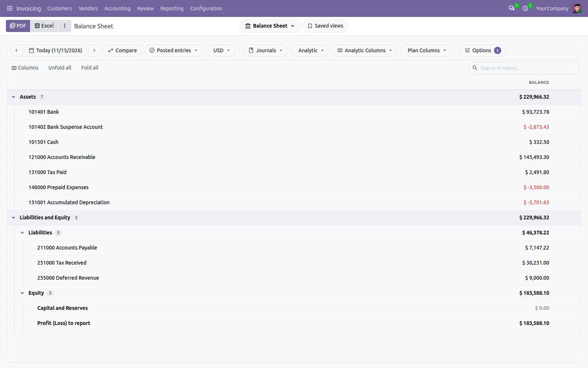

Odoo Mates · free and open source
Dynamic Report Engine
Build on-screen reports for Odoo in Python only. Filters, folding lines, drill-down, notes, saved views and PDF, Excel and CSV exports come with the engine.
No JavaScript to writeGrouping and pagingDrill-down per figureNotesSaved viewsPDF, Excel, CSVFree, LGPL-3
What a report gets
Declare the columns, the filters and the options; give rows or lines.
Filter Bar
Periods with arrows, record filters, one-of and on/off options, numbers.
Comparison
Earlier periods side by side, as many as the report allows, or custom dates; amounts in K or M.
Grouping
Up to three levels picked by the user, sums, sorting, search, pages.
Column Groups
Headers over several columns; columns shown, hidden and reordered.
Drill-down
A line or a single figure opens what makes it, or another report.
Notes
Notes on figures, shared in the company, in the exports too.
Saved Views and Folds
Views private, shared or default; folds remembered per user.
Exports
PDF in the company layout, Excel with outline levels, CSV.
Row Buttons
Actions on a line, such as sending a document by email.
Safe by Default
Options checked, access per report, data read through the ORM.
A Few Lines of Python
A grouped report fits in one small model and one client action.
Translated
Every text of the screen goes through the translations of Odoo.
A report built on the engine
The Balance Sheet of Dynamic Accounting Reports: the filter bar, the sections that unfold, the exports, all from the engine.

For developers
Inherit om.report, set _report_name, declare _om_get_columns and give _om_get_rows; open it with an ir.actions.client whose tag is om_report and whose context names the model in om_report_model. The README of the module has a complete example.
Used by
Dynamic Accounting Reports (om_dynamic_reports): twenty accounting reports.